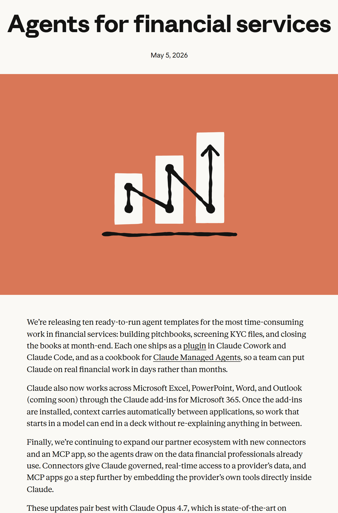

ANTHROPIC NEWS · MAY 5, 2026
Anthropic just shipped agents for
FINANCE.
anthropic.com/news/finance-agents

10 ready-to-run agent templates
Pitchbooks · Credit memos · Month-end
Live in Claude Cowork
Cowork · Code
Cowork · Code · Managed Agents
TEN TEMPLATES
Three categories. Ten agents.
Research & Client Coverage
01
Pitch Builder
02
Meeting Preparer
03
Earnings Reviewer
04
Model Builder
Credit & Compliance
05
Market Researcher
06
KYC Screener
Finance Operations
07
Valuation Reviewer
08
General Ledger
09
Month-End Closer
10
Statement Auditor
RUNS INSIDE 365
Claude lives where finance work already happens.
Excel
Modeling · auditing
PowerPoint
Auto-updating decks
Word
Credit memos
Outlook
Inbox · drafting
Context carries automatically.
Plus a partner ecosystem.
Partner ecosystem
S&P
MSCI
PitchBook
Morningstar
LSEG
Moody's MCP · 600M companies
CITADEL
“
Our investment professionals live in data and analytical models, and Claude for Excel meets them there. Analysts use it to build coverage models, separate signal from noise, and pressure-test their work — all with a step-change in efficiency.
Where analysts already live.
Coverage models. Pressure-tested.
Step-change in efficiency.
FROM THE LAUNCH VIDEO
Watch the real workflow.
youtube.com/watch?v=foxeK2AXfHQ · 0:30 → 0:40
Anthropic · "Agents for Financial Services"
FIS
“
When we began to build AI agents, we knew we needed a provider we could trust. Anthropic was the clear choice. Together we're building an agent that compresses AML investigations from days to minutes.
A provider they could trust.
Anthropic was the clear choice.
AML: days → minutes.
THE RECEIPTS
The numbers back it up.
64%
VALS AI FINANCE
BENCHMARK · OPUS 4.7
BENCHMARK · OPUS 4.7
100%
WALLEYE CAPITAL
USES CLAUDE CODE
USES CLAUDE CODE
More wins
Carlyle
Core part of AI tech stack
BNY
Digital employees · case end-to-end
Travelers
Elevated engineering excellence
Every employee. AI-first.
READ THE FULL POST
anthropic.com/news/finance-agents
Subscribe→
10% off auto-applies via the link.